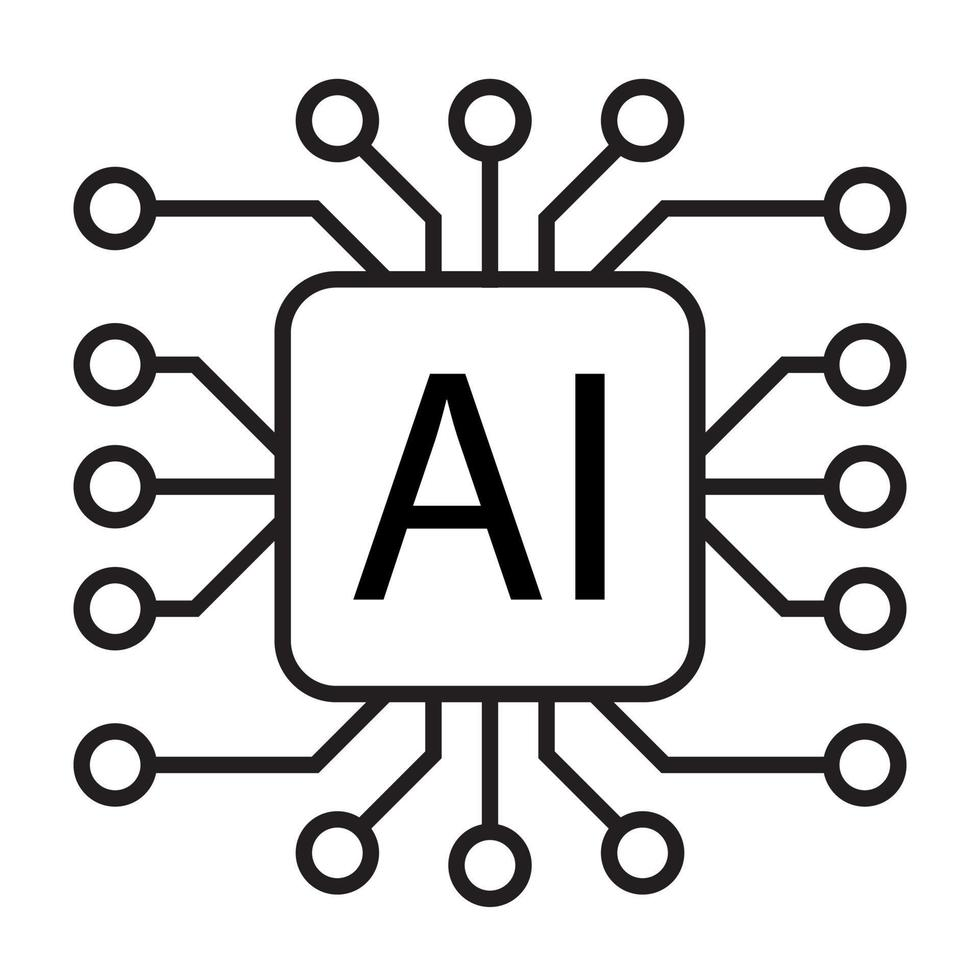

🤖 인공지능(Artificial Intelligence)의 정의
**인공지능(AI)**은 인간의 학습 능력, 추론 능력, 지각 능력을 컴퓨터 프로그램으로 구현한 기술을 말합니다.
AI의 주요 목표
- **학습 (Learning)**: 데이터로부터 패턴을 인식하고 새로운 지식을 습득하는 능력.
- **추론 (Reasoning)**: 논리적 규칙과 사실을 바탕으로 결론을 도출하는 능력.
- **문제 해결 (Problem Solving)**: 주어진 환경과 목표에 따라 최적의 행동 방식을 찾는 능력.
궁극적으로 AI는 인간의 지적 활동을 모방하거나 능가하는 시스템을 구축하는 것을 목표로 합니다.